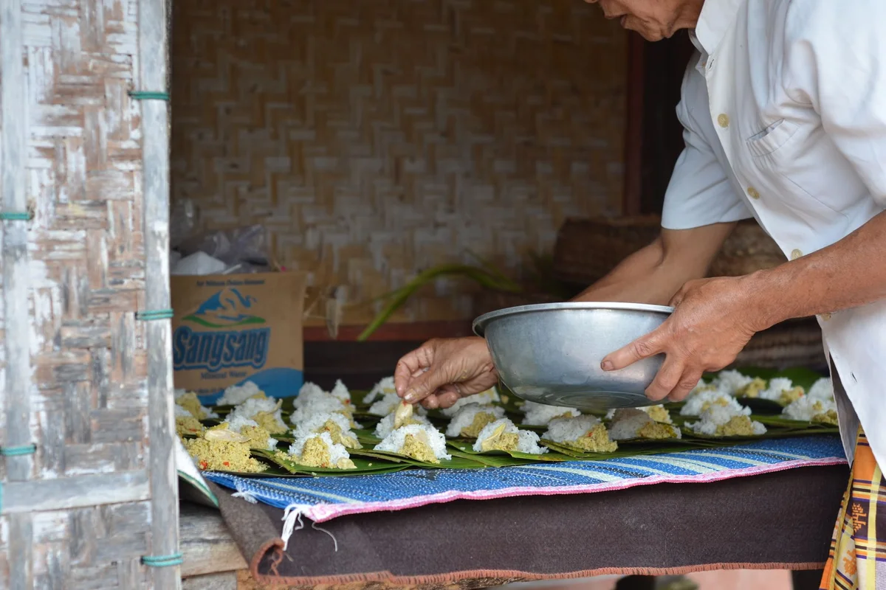

Introduction
Few culinary traditions on earth are as deeply woven into the fabric of daily spiritual life as traditional Balinese food. The cultural significance of what Balinese people eat, how they cook it, and with whom they share it goes far beyond nutrition or flavour. Every ingredient, every offering, every communal meal carries a layer of meaning rooted in Hinduism, ancestral memory, and a philosophy of balance that the Balinese call Tri Hita Karana, the harmony between humans, nature, and the divine.
Right now, Bali is having a serious cultural moment. As global tourism rebounds and travellers move away from resort menus toward authentic local experiences, Balinese food is attracting unprecedented attention. Culinary anthropologists, food journalists, and even UNESCO have been shining a spotlight on dishes that Balinese families have been preparing for centuries, and the conversation is richer than ever.
This is not a listicle of things to eat before you leave the island. This is a deeper look at why Balinese food matters: the rituals behind it, the social codes embedded in it, and the dishes that carry entire cosmologies on a banana leaf. Whether you are planning a trip to Bali or simply curious about one of the world's most spiritually charged food cultures, this guide will change how you think about what is on the plate.
The Spiritual Architecture of a Balinese Kitchen
Before a single ingredient is chopped, the Balinese kitchen is already a sacred space. In traditional Balinese homes, the kitchen (paon) occupies a specific position within the compound according to the principles of Asta Kosala Kosali, the Balinese adaptation of Vastu Shastra. It is typically placed in the south or southwest corner, associated with the god Brahma, who governs fire and creation. Cooking is therefore not a mundane act but an extension of worship.
The hearth itself is considered inhabited by Brahma Agni, the divine fire. Before major cooking sessions for ceremonial purposes, many Balinese cooks will make a small offering at the base of the stove. This is not a tourist-friendly performance; it is a deeply private act that most visitors never witness. The fire must not be polluted by impure intentions, harsh words, or certain ingredients on spiritually sensitive days.
This sacred geography extends to ingredients. Certain foods are considered sekala (visible, worldly) while others carry niskala (invisible, spiritual) properties. Turmeric, for instance, is used not only to flavour dishes but to purify ritual food and colour offerings. Shallots and garlic are almost never consumed raw because they are believed to carry heat that disrupts spiritual equilibrium. The base genep, the complete spice paste that underlies most Balinese cooking, is itself a kind of alchemical formula, combining up to fifteen ingredients including galangal, lesser galangal, candlenut, coriander, black pepper, and shrimp paste into a blend that is as much a ritual act as a culinary one.
Babi Guling: A Sacred Pig and What UNESCO Got Right
Babi guling, the famous Balinese suckling pig, was inscribed on the UNESCO Representative List of the Intangible Cultural Heritage of Indonesia in 2011. That recognition matters not because it added prestige to a dish, but because it formally acknowledged something Balinese people have always known: this is not just food, it is ceremony.
The preparation of babi guling for a major ritual can take two full days. The pig is stuffed internally with a paste of turmeric, lemongrass, ginger, galangal, shallots, chillies, and sacred leaves including daun salam and base wangen. The exterior is rubbed with additional turmeric paste before it is skewered and rotated slowly over coconut husk embers for four to five hours. The rotation is not automated but performed by hand, traditionally by men, while prayers are recited.
What most visitors eating babi guling at a local warung do not realise is that the version they are eating is a democratised, commercialised cousin of the original. In its ceremonial form, babi guling is prepared exclusively for events such as odalan (temple anniversaries), tooth filing ceremonies (metatah), and cremations (ngaben). The pig is considered a conduit between the human and divine realms. Consuming it at such events is an act of communion, not consumption.
The most celebrated destination for a ceremonial-grade experience outside of an actual ceremony is Ibu Oka in Ubud, which has maintained traditional preparation methods since the 1970s. But for something even closer to the ritual original, seek out small village warungs in Gianyar on market days, where the pig is prepared at dawn and sold out by mid-morning.

Megibung: The Communal Meal as Political and Spiritual Act
In 1614, the Karangasem king Anak Agung Karangasem introduced a practice during military campaigns that would become one of Bali's most enduring social institutions. Soldiers from different castes were instructed to eat together from a single large mound of rice and shared dishes, erasing hierarchical distinctions that would otherwise have governed who ate with whom. This practice became known as megibung.
Today, megibung is practiced across Bali at temple festivals, weddings, and major Balinese holidays including Galungan, Kuningan, and Nyepi. The format is consistent: six to eight people (traditionally men, though this is increasingly mixed) sit around a single large communal serving called a gibungan, a mound of rice surrounded by small portions of meat, vegetables, and condiments. Everyone eats simultaneously, using the right hand, and no one takes a second portion of anything before everyone at the table has had their first.
The rules of megibung encode a sophisticated social philosophy. Conversation during the meal is encouraged but argument is forbidden. Wasting food is considered disrespectful to both the host and the divine. The shared plate is a leveller: a priest and a farmer eat from the same mound, reinforcing the Balinese concept of menyama braya, or communal brotherhood.
For travellers, genuine megibung experiences are rarely found in tourist restaurants. The best way to encounter one authentically is through community homestays in villages like Sidemen or Penglipuran, or by attending a village ceremony as a respectful guest, always with local guidance.
The Insider Angle: Why Balinese Food Is Not Actually Spicy (And What That Reveals)
Here is the contrarian truth that most food articles about Bali skip entirely: authentic ceremonial Balinese food is deliberately mild. The fire-forward heat that many tourists associate with Balinese cuisine comes largely from the Javanese and Lombok influences absorbed through trade and migration, and from the tourist-adapted versions of dishes designed to satisfy expectations.
Traditional Balinese cooking layers complexity through aromatics rather than chilli heat. The goal is not to excite the palate but to achieve rasa, a Sanskrit-derived concept that encompasses taste, feeling, and essence simultaneously. A well-made base genep is complex, earthy, and fragrant without being aggressive. The heat in ceremonial food is considered spiritually disruptive, which is why many dishes prepared for temple offerings contain no chilli at all.
This distinction matters because it reframes how to taste Balinese food properly. Instead of chasing the spiciest sambal, look for the quality of the lawar, the finely chopped meat and vegetable salad bound with fresh coconut and herbs, or the depth of a well-reduced be tutu, the slow-cooked duck dish wrapped in banana leaves and cooked for up to eight hours underground. These are the dishes that reveal the intellectual sophistication of Balinese cooking, not the ones that test your tolerance for capsaicin.
The underground cooking method for be tutu, specifically betutu in its full form, is itself a metaphor. The long, patient, invisible process mirrors the Balinese relationship with time and ritual: transformation happens slowly, beneath the surface, and the result is something that could not have been achieved any other way. Men Tempeh in Gilimanuk is widely considered the gold standard for traditional betutu, drawing Balinese pilgrims from across the island.
Ritual Offerings and Edible Art: Canang Sari and Ceremonial Foods
Walk any street in Bali and you will see them: small woven palm leaf trays holding flowers, rice, and sometimes food scraps placed on the pavement, on doorsteps, on the hood of a car, at the base of a tree. These are canang sari, daily offerings that Balinese Hindu women prepare each morning as an expression of gratitude to the universe. They are made fresh every single day, never recycled.
The edible components of canang sari are not chosen randomly. Each colour of flower corresponds to a cardinal direction and a deity: white flowers face east for Iswara, red flowers face south for Brahma, yellow flowers face west for Mahadewa, and blue or green flowers face north for Wisnu. When food is included, it is typically cooked rice, fruit, or small portions of ceremonial dishes from the previous day's cooking.
On major ceremonial days, offerings escalate dramatically. Gebogan are towering fruit and flower arrangements, sometimes over a metre tall, balanced on the heads of women and carried to the temple in procession. The fruits are real, the flowers are real, and the entire construction is assembled without glue or wire using only the natural geometry of the fruits and leaves. After the ceremony, the offerings are brought home and consumed by the family, completing the cycle of the sacred and the edible.
For visitors who want to understand this intersection of food and ritual more deeply, the ARMA Museum in Ubud regularly hosts workshops on offering-making, and several community organisations in Klungkung offer immersive experiences around ceremonial cooking during festival season.
Prices, Timing and Practical Notes for the Food-Curious Traveller
Understanding when and where to eat in Bali makes an enormous difference to the authenticity of the experience.
Best time to visit for food culture: The months of June and July coincide with the highest density of temple ceremonies across the island, making it the richest season for encountering ceremonial food in context. November brings Galungan in 2025, one of the most important Balinese holidays, when ritual cooking fills every village compound.
Where to eat like a local:
- Village warungs: A full plate of nasi campur (mixed rice with accompaniments) costs between 20,000 and 40,000 Indonesian Rupiah (approximately 1.20 to 2.50 euros) at a genuine local warung.
- Pasar pagi (morning markets): The best street food in Bali is sold between 6am and 9am at morning markets. The Gianyar Night Market (which runs from late afternoon) and the Badung Market in Denpasar are two of the best.
- Ceremonial babi guling: Between 40,000 and 80,000 Rupiah at a traditional warung; tourist-facing restaurants in Seminyak charge five to ten times more for an inferior product.
Practical note on dietary restrictions: Pork is central to Balinese Hindu cooking and appears even in dishes that might not seem obvious. Muslim-friendly and vegetarian Balinese food exists but requires specific knowledge of which warungs cater to it. The area around Ubud has the highest concentration of genuinely vegetarian options that still respect Balinese flavour principles.
Final Thoughts
Balinese food is one of those rare culinary traditions that refuses to be reduced to a checklist of dishes. Every meal, whether a simple plate of nasi campur eaten at a roadside warung or a full ceremonial spread prepared over two days for a village cremation, participates in a larger system of meaning that connects the living to their ancestors, to their gods, and to each other.
What makes this tradition particularly urgent to understand right now is that it is under genuine pressure. Commercialisation, the convenience of tourist menus, and the migration of young Balinese to urban centres are slowly eroding the knowledge of ceremonial cooking techniques. The women who know how to build a gebogan from scratch, or who can recite the correct order of ingredients for a base genep intended for a ngaben ceremony, are often in their sixties and seventies with few apprentices.
Travelling with this knowledge changes everything. It turns a plate of food into a conversation, a market into a classroom, and a ceremony glimpsed from a doorway into something genuinely moving. If this article shifted how you see Balinese food culture, share it with someone who is planning to visit Bali. They will eat differently for it.
Frequently Asked Questions
What is the cultural significance of traditional Balinese food?
Traditional Balinese food is inseparable from the island's Hindu spiritual life. Dishes are prepared according to sacred principles, served at religious ceremonies, and even the act of cooking is considered a form of worship. The kitchen is a sacred space aligned with cosmological directions, and major dishes like babi guling serve as conduits between human and divine realms during ceremonies such as cremations and temple festivals.
What is megibung and why is it important in Balinese culture?
Megibung is a traditional Balinese communal eating ceremony in which six to eight people share a single large mound of rice and accompanying dishes without individual plates. Originating in the 17th century as a practice to equalise soldiers of different castes, it today embodies the Balinese values of equality, communal brotherhood, and gratitude. It is practiced at major ceremonies including temple festivals, weddings, and holidays like Galungan and Nyepi.
Is babi guling a UNESCO heritage dish?
Yes. Babi guling, the Balinese suckling pig, was inscribed on the UNESCO Representative List of Intangible Cultural Heritage of Indonesia in 2011. The recognition acknowledges not just the dish itself but the elaborate ceremonial preparation process, which can take two full days and involves specific spice pastes, sacred leaves, and ritual cooking over coconut husk embers.
What is base genep in Balinese cooking?
Base genep is the foundational spice paste of Balinese cuisine, containing up to fifteen ingredients including galangal, lesser galangal, turmeric, candlenut, coriander, black pepper, shallots, garlic, and shrimp paste. It underpins most traditional Balinese dishes and is considered as much a ritual preparation as a culinary one, with different versions made for everyday cooking versus ceremonial use.
When is the best time to visit Bali to experience traditional food culture?
June and July offer the highest concentration of temple ceremonies across Bali, making them ideal for encountering ceremonial food in its authentic context. November 2025 will see the Galungan festival, one of the most important Balinese holidays, during which ritual cooking and communal feasting take place in virtually every village compound across the island.